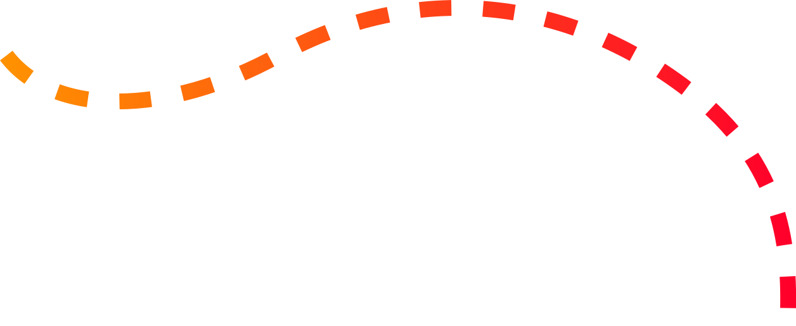
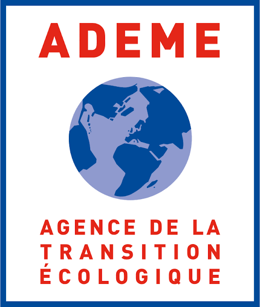

Données essentielles
BD France topo
Les données essentielles de description du territoire, agrégées à partir des sept packs thématiques. Une base commune, fiable et maintenue pour l’ensemble de l’écosystème.
République
française
BD France
Construisons l'information géographique de la France

BD France est l’écosystème de donnée géographique de référence pour l'action publique : une base homogène, produite et actualisée sur l'ensemble du territoire par l’IGN, enrichie de données expertes par un réseau de partenaires.
De la cohérence des données pour faciliter leur réutilisation et leur intégration.
Sur des thématiques clés - Hydrographie, bâti, végétation, relief...
Des données de l'IGN et celle des acteurs publics ou privés qui apportent une connaissance fine et complémentaire du territoire.
Pour utiliser, contribuer et se synchroniser sur la donnée
BD France TOPO regroupe les données essentielles de description du territoire, organisées autour de sept packs thématiques.
Chaque pack rassemble les données essentielles de son thème et les complète par des couches expertes, produites avec ou pour les partenaires de l’écosystème.
Données essentielles
Les données essentielles de description du territoire, agrégées à partir des sept packs thématiques. Une base commune, fiable et maintenue pour l’ensemble de l’écosystème.
Pack thématique
Description du pack
Pack thématique
Description du pack
Pack thématique
Description du pack
Pack thématique
Description du pack
Pack thématique
Description du pack
Pack thématique
Description du pack
Pack thématique
Description du pack
Apportent la connaissance du terrain
Je connais mon territoire, mon métier mieux que personne. Je veux contribuer directement à améliorer la donnée.
Responsable et garantie de la qualité de la donnée
Je produis et diffuse les données socles référentielles de description du territoire français.
Intègre la donnée dans leurs outils, modèles
J’utilise une donnée fiable, de référence, à jour et documentée
BD France mobilise un écosystème de producteurs déjà mobilisés autour de la donnée topographique.

La BD France met à disposition un ensemble d’outil avec des parcours utilisateur·ice pensés et adaptés en fonction de vos pratiques métiers et vos usages des SIG.
Outils
Créez des signalements, enrichissez des bases de données et animez vos communautés de contributeurs.
Outils
Signalez, contribuez directement à la donnée depuis QGIS à l’aide de nos plugin QGIS pensés pour faciliter la contribution.
De la BD TOPO® à la BD France, une première diffusion de jeux de données tests sur le thème « végétation »
Retrouvez nos dernières actualités relatives à BD France sur cartes.gouv.fr